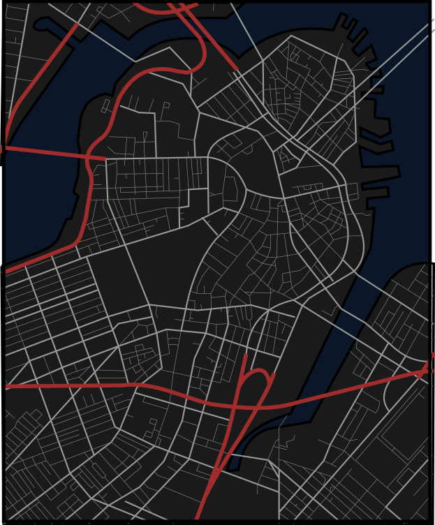

Chapter One

The Prison Door
The novel begins by examining the irony within the colony’s layout.
Even though it was created with Puritan ideals, it included a prison and cemetery, revealing that the first Puritans ultimately knew that establishing a Christian "utopia" was not possible.
The prison itself has an ominous, spiked wooden door, with a wild rose bush growing just outside of it – symbolically showing that nature shares pity and kindness more indiscriminatly then humankind.
One the setting is described, the author then states that the just-mentioned roses will relieve readers of the frailty and sorrow within the oncoming story, just as they comfort prisoners who walk through the prison door.
Chapter Two
The Market-Place
The story begins with a gathering crowd that came to witness a public punishment.
The colony's punishments are decided both legally and religiously – though the difference is minute. Examples include expelling people with religious differences, Natives who become drunk, and persecuting people for witchcraft.
At present, the Puritan women are focus on the accused: a woman named Hester Prynne. The women believe their local Minister, Reverend Dimmesdale, is especially aggrieved by her, since she was his congregant, and that her crime had tarnished the community. Unable to attain a death sentence, the women discuss branding Hester’s forehead, saying that whatever item she must wear for the crime will easily be covered.
Soon, Hester herself determinedly exits from the prison, ascends the town’s scaffold, and holds a baby over her chest, clearly hiding something. Though Hester quickly accepts that she cannot hide either the baby or the item on her bodice, which is an elaborately embroidered letter ‘A’ made from scarlet red cloth and gold thread, which stands for "adulterer". Hester is condemned to wear this scarlet letter for the rest of her life, and can immediately feels the letter secluding her from society.
Soon, the women return to discussion, angry with how beautifully Hester had embroidered the scarlet letter - seeing it as a mockery. They discuss their wish to rip off the letter and her gown to replace them with more unsightly alternatives.
Meanwhile, Hester is described as resembling Mother Mary with Baby Jesus. However, the crowd sternly glares instead, which Hester finds to be nearly unbearable, preferring mockery. To escape, she relives her memories, including her marriage to a European scholar, who had a physical anomaly where one shoulder sat noticably higher than the other. After marrying, Hester came to New England alone, and found her way into her present situation – which she is just starting to accept.
Chapter Three
The Recognition
At the edge of the crowd, Hester sees a Native man and European with the same shoulder anomaly as her husband. Hester quickly realizes that her husband has arrived, and he slowly sees that Hester, his wife, is being punished. He presses his finger to his lips and signals for her to not reveal his presence, then asks a spectator about what is happening.
After explaining his arrival and subsequent imprisonment within a Native tribe, the spectator welcomes the husband back to European society, where “sin is searched out, and punished”, and explains that Hester came from Amsterdam two years ago, but her husband never followed. Now, she has had a baby with someone else and will not name the father. The husband feels frustrated with himself for not expecting this result after a two-year delay in following Hester, and learns that she must now stand on the scaffold for 3 hours, before wearing the scarlet letter for the rest of her life. The spectator also notes how unfair it is for Hester to be punished alone, though believes the father will be found.
During this exchange, Hester reflects on how it better for her affair to be discovered by him in such a public way, rather than in private, while the local leaders, including the Governor, Minister John Wilson, and Minister Arthur Dimmesdale begin to speak.
Minister Wilson states that he pleaded for Minister Dimmesdale to force Hester to name the father, for the sake of her soul, to demonstrate repentance, and for Dimmesdale to uphold his responsibilities as her Minister. In response, Dimmesdale - who was formally educated in Europe, and is young, well-spoken, and viewed as pure - asks Hester to name the father, arguing that he does not deserve pity, and it would reveal his hypocrisy along with his sin. However, Hester still refuses - even when Wilson offers to remove the scarlet letter in exchange. Hester then says her child will have a “heavenly father”, instead of a physical one.
Dimmesdale remarks on her generosity, puts his hand over his heart, and retreats, while the other leaders begin hours of lectures on sin, using comparisons to the scarlet letter until everyone imagines it as "flaming" and “infernal”. Hester's baby cries during the entire event.
Chapter Four
The Interview
In prison, Hester has an emotional breakdown, and medical help is sought when it is apparent that Hester’s baby is also experiencing pain. A physician named Roger Chillingworth is brought, however it is Hester’s European husband in disguise.
Alone toghether, Hester mistrusts him – fearing that he will poison her baby. Though, Chillingworth insists he will not, and gives a drought which helps the baby sleep. He then makes another for Hester while staring at her coldly. Still mistrustful, Hester says she does not want to drink poison either, though he responds that he would rather suffer her to live with the scarlet letter.
Chillingworth toments Hester while together by frequently touching and mentioning the letter. He then expresses his self-anger for thinking that she could be happy with someone anti-social, older, and physically different as he was, and adds that he hoped for his intellect to maintain her loyalty and attraction. Hester then counters that she always said she was not in love with him. However, Chillingworth stubbornly responds that he imagined his wish to find love through her could inspire her to love him back. Feeling guilt, Hester says she betrayed him, though Chillingworth says they have betrayed each other, then explains he doesn’t want vengeance from her, but from the father instead.
When Hester refuses to name the father, the husband coldly oaths to find him. Once found, rather than identify or kill him, Chillingworth wants hthe father to live so he can punish the man himself.
Before leaving, Chillingworth makes Hester promise to not tell anyone about their relationship, preferring to assume his new identity, to let the town believe that Hester’s husband is permanently gone, and to avoid sharing the dishonor of her affair. Hester promises, saying she will keep his secret just as she hides the father's. This causes Chillingworth to smile hideously, making Hester question the intention of the promise – though he assures her that the promise will not specifically hurt her.
Chapter Five
Hester at Her Needle
Hester knows the scarlet letter will bring new challenges, and she will be seen as embodying “women’s frailty and sinful passion", as well as the sin of adultery. However, she remains in New England for various reasons. She feels rooted and reborn from her sentenceing, so much that her old life now feels foreign to her. Hester is also still in love with her baby's father - who lives nearby - and she tells herself that remaining not only builds penance, but develops a new “saint-like” purity within her.
Hester moves into an abandoned cottage built on infertile soil on the edge of the colony. To earn a living, she sews garments for government officials, newborns, and funerals. Though, she is never asked to sew for a wedding due to her prior affair.
Every day, Hester is described as wearing dull, basic garments, yet she sews “fanciful” and “fantastic” dresses for her daughter, which give the child a more “airy charm”. She also sews for charity, with the hope of earning penance. However, sewing has become Hester's only means of expressesing any “taste for the gorgeously beautiful”.
The scarlet letter is described as having a worse effect than the mark upon Cain within The Bible. Hester is ignored in town, women treat her meanly, church ministers use her as an example during services, and children taunt her during walks. However, Hester never retorts, and sees herself as a martyr. Though, people occasionally look upon the letter with sympathy – as though they had a sin of their own - leading Hester believe that the letter reveales the people's true hearts, and shows that she is not the only person to sin within Puritan society. However, no matter the time of day, the letter always stands out with “red-hot with infernal fire, and could [always] be seen glowing…” To Hester, the brooch also seems to sear from her bodice.
Chapter Six
Pearl
Hester named her child Pearl since she symblicaly came with a great price, which was ‘purchased’ with all that Hester had. Hester also considers Pearl to be her only tresure.
Every day, Hester worriedly watches Pearl become more wild, passionate, and dark in demeanor. She often exhibits emotions which Hester strives to supress within herself, and has an other-worldly ability to sense important details around her. She is also incapable of sorrow, and is unadaptable to the rigid Puritan society around her. For all these reasons, the children of the Colony reject Pearl, and Pearl now scorns the other children and retaliates to their instagations whenever possible. Due to their ostricization, Hester and Pearl are always with together, however Pearl is agonizingly always interested in her mother’s scarlet letter – though Hester considers this irony to be due penance.
Compared to other Puritan families, Hester is noticably less strict on Pearl, and Pearl is now spoken of as being a demon’s child, who is derived from Hester’s sin, which is still seen as a dishonor to the Puritan community.
Chapter Seven
The Governor’s Hall
One day, Hester passes by the prison en route to the Governor’s mansion to deliver a pair of gloves, and to ask the Governor to not remove Pearl from her care. Unhappy with Hester's parenting, the colonists have gossiped about adopting Pearl into a more orthodox Puritan family, believing that Pearl’s soul was in jeopardy by living with Hester.
Today, Pearl is dressed in a scarlet dress that is embroidered with endless gold details – transforming Hester’s daughter into a living embodiment of the scarlet letter. On their way, children attempt to throw mud at them, though Pearl chases them off and returns to her mother with a wide smile.
Once arrived, Hester encounters an indentured servant who allows her to barge into the mansion to meet with the Governor, after mistaking her demeanor and scarlet letter for signs of high rank. Once inside, Hester and Pearl son find a rose bush, and Pearl begins to scream when Hester refuses to pluck a blossom for her. Though, Pearl ceases when the Governor appears.
Chapter Eight
The Elf-Child and the Minister
The Governor is with three guests – Minister Wilson, Minister Dimmesdale, and Hester's husband Chillingworth. Chillingworth has befriended Dimmesdale over time, whose health has significantly declined since Hester's public punishment.
After Hester beseeches the men to leave Pearl in her care, Minister Wilson asks Pearl if she is a Christian child, or otherworldly, like the “superstitious creatures that were thought to have been left in England.” Pearl says she is Hester’s daughter.
The men then explain they were just discussing the possibility of adopting out Pearl, to which Hester assures them that she can raise Pearl through the shadow of her lessons from the scarlet letter, which could potentially make Pearl wise. After hearing her argument, the men try to test Pearl’s knowledge of Puritan beliefs. and aks Pearl who had created her, to which Pearl responds in an otherworldly demeanor, stating that she was plucked from a wild rose bush that grew by the prison door – which she states simply because she saw the prison and rose bush before the conversation had started. However, Chillingworth smiles as the Governor expresses his belief that Pearl’s soul is at risk and should be adopted.
Determined, Hester grabs Pearl, declaring that God had given Pearl to her, and that Pearl unavoidably helps Hester earn retribution and ponder over her sins. She then begs Dimmesdale, who was once her Minister, to speak for her. He looks troubled and saddened by the scene.
Dimmesdale explains that Pearl prevents Hester from further sin, and can create a form of repentance if raised well. Chillingworth comments on Dimmesdale’s attachment to the situation before Pearl runs to Dimmesdale and places his hand against her cheek – which is a rare sign of affection from her. The men finally agree to leave Pearl in Hester’s care.
As Hester leaves, Mistress Hibbins – the Governor’s sister, who will later be accused of witchcraft – runs into Hester and invites her into the forest at night, stating that she promised to being Hester to “the Black Man”. Hester rejects the offer proudly and goes home with Pearl – knowing that Pearl is the reason she was not tempted to go to “Satan’s snare”.
Chapter Nine
The Leech
Chillingworth began attending Dimmesdale’s congregation after arriving at the colony. At the same time, Dimmesdale's health also began to suffer, seemingly from over-devotion to his job, and developed the habit of putting his hand over his heart whenever startled.
While unsuccessful in convincing Minister Dimmesdale to marry – due to his vow of celibacy - the town does convince Dimmesdale to let Chillingworth medically treat him, seeing Chillingworth as someone sent from God for exactly this purpose. Soon, Dimmesdale allows the physician to move in with him for treatments, and both men quickly take a keen interest in one another – such as Chillingworth’s interest in Dimmesdale hanging religious decor depicting David and Bathsheba, and Nathan the Prophet.
Chillingworth, meanwhile, had also changed into someone uglier and more evil since his arrival. The change became so pronounced that the town also began to wonder is Satan had come in disguise, to haunt the Reverend and plot against him instead of treat him. The town watched the situation from afar, hoping that the Minister would come out glorious, but instead Dimmesdale only looked sadder with each passing day.
Chapter Ten
The Leech and His Patient
Chillingworth was once a man of integrity, who sought the truth while making informed judgements. However, he now obsesses with digging into Dimmesdale’s conscious for secrets with no good intentions.
To others, this unhealthy dynamic would be obvious, but Dimmesdale is unable to see past his depression, which causes him view all people the same, and prevents him from examining Chillingworth as the enemy which he actually is.
One day, the two roommates discuss the idea of people who die without confessing their secrets. These people are described as cowards, who hide from rightfully deserved shame, and hide their true, tarnished characters while falsely displaying a pure image to the public. During this discussion, they are interrupted by the sound of Pearl outside, and Hester soon appears as well. Eventually, all four notice one another, though, Pearl ends the interaction by beckoning her mother away before the “Black Man” catches her, explaining in her otherworldly way that he has already caught the Minister.
After Hester and Pearl leave, the two men reflect on how Hester wears her sin publicly, which makes her less miserable than someone who would carry their sins in private. This exchange causes Chillingworth to ask Dimmesdale if he has told him all his grievances – otherwise his treatment would be compromised from his spiritual grievances. However, Dimmesdale sternly explains that he will not confess his sins to a physician who does not deal “medicine for the soul”. He further adds that Roger should not meddle in affairs that between God and a sufferer.
At a later time, Dimmesdale falls into a deep sleep while in his study, enabling Chillingworth to examine the Minister while he is unconscious. Chillingworth finds a feature on his chest, though it is not described. However, the discovery makes Chillingworth act excitedly and sinisterly, like Satan when “a human soul is lost to heaven, and won into his kingdom”.
Chapter Eleven
The Interior of a Heart
Chillingworth continually grows evil while obsessing over revenge. Each day, he alters Dimmesdale’s wellbeing by instigating emotions of agony, fear or any other feeling that creates emotional torment. Ironically, this torment makes Dimmesdale’s sermons more relatable to audiences, who relate to his eloquently conveyed sermons on pain and sin. It is also stated that if Dimmesdale was not so tormented from his own sins, then he would be considered saintly by Puritan beliefs. Though, it is clear that Dimmesdale is suffering from serious guilt over his sins - to the point that his health degrades.
Secretly, Dimmesdale also harms himself, overly fasts, and constantly holds private vigils for himself throughout the night until he hallucinates of angels, demons or his parents haunting him. He also imagines Hester with Pearl, who points at her mother’s scarlet letter and then towards his chest.
Dimmesdale holds a deep desire to confess his sin when preaching to his congregation – though he never does.
Chapter Twelve
The Minister’s Vigil
Dimmesdale ascends the town’s scaffold late at night. He shrieks, thinking the town will awaken and find him on the scaffold. However, only two people appear before retreating without seeing Dimmesdale.
Soon, Minister Wilson appears, returning home from assisting at a deathbed. Dimmesdale daydreams of announcing his presence, but remains quiet and surprised by his own instincts. As he grows colder from the night and more paranoid, Hester then appears with Pearl, also coming from the deathbed, to take measurements for funeral robes.
Dimmesdale reveals himself, and beckons Hester and Pearl to join him on the scaffold. Once together, he takes Pearl’s hand and feels a rush of joy. However, Pearl asks if he will stand with her and her mother tomorrow, during the day, on the same scaffold. He refuses, which leads Pearl to try and remove her hand – though he refuses to let go. She repeats her question, and he says he will stand with them on “the great judgement day”. A meteor then crosses the sky, creating a dull red letter A.
Together on the scaffold, with Dimmesdale holding his chest, Hester wearing her letter, and Pearl between, Pearl begins to point in the distance at Chillingworth, who is watching them from a distance. This scares Dimmesdale, who asks Hester if she knows the man. Rather than answer, Pearl injects and lectures him, saying he is not “bold” or “true”.
As this happens, Chillingworth nears, explaining that he also want to the deathbed, as a physician. He encourages Dimmesdale to return home with him, and Dimmesdale agrees and descends from the scaffold.
The next day, after Dimmesdale gives a passionate sermon, a man returns a Dimmesdale's glove to him, saying that he found it on the scaffold, though believes that it was left by Satan, and not by Dimmesdale.
Chapter Thirteen
Another View of Hester
After 7 years, Hester is shocked by how emotionally and physically destroyed Dimmesdale had appeared on the scaffold, even though he is still intellectually sharp and creates gripping sermons. She now feels a responsibility to help him.
Over time, Hester’s charity has led the Puritans to sympathize for her, and even say that the scartlet letter represents “Able” instead of “Adulterer”. However, Hester doesn’t feel that she deserves the growing kindness.
The letter had also withered away what was left of Hester’s old personality: her hair now hides in a cap, she wears plain clothing, and her confidence changed into humility. Meanwhile, Pearl has continually grown stranger by the day, in her own otherworldly way. For years, Hester regularly wondered whether Pearl was supposed to exist, and wondered the same for womenkind in general. She pondered over what would be needed to finally allow women to be equal to men in society, and found herself experiencing suicidal urges. However, after the night on the scaffold with Dimmesdale, she now feels new purpose in rescuing him from Chillingworth, her European husband.
Hester also grows angry with herself, realizing she condemned Dimmesdale to torment by not revealing Chillingworth's true identity. However, she acknowledges that she no longer feels obligated to uphold her promise, thanks to her achieved growth over the years, while Dimmesdale has only fallen in demise.
Chapter Fourteen
Hester and the Physician.
Hester sees the Chillingworth foraging for herbs, and asks Pearl to play nearby while she speaks him. He is no longer calm or quiet, but fierce, eager, and guarded with a searing gaze - becoming an example of someone turning themselves into the devil.
Hester explains her intention to break her promise due to her duty for Dimmesdale, and to end the anguish that Chillingworth is clearly putting him through. However, Chillingworth gaslights Hester, claiming he does not know what she means, and asks for more specific examples. He also states that he is treating Roger as any physician would, and adds that Dimmesdale lacks the strength that Hester has.
After Chillingworth says his treatments are the only reason that Dimmesdale is alive, Hester responds that it would have been better for Dimmesdale to die than to suffer and believe his torment is God-given, rather than the actions of his worst enemy. She also adds that Chillingworth was once human, but has become a fiend.
Chillingworth takes a second to comprehend his new characterization, then responds that the torment will not only continue, but grow. Hester then blames herself for everyone's pain, and asks why he will not torment her instead. Though he answers that the scarlet letter is avenging his pain already.
After stating that she will tell the truth to Dimmesdale, Chillingworth says that he does not care, and foreshadows that their destinies are set, adding that all the good within her has been wasted due to this inevitable destiny. Hester then retorts that his traits have also been wasted as well, since became so evil.
Chapter Fifteen
Hester and Pearl
It is noted that sunlight never falls on Chillingworth, who travels with a seemingly unavoidable shadow.
Hester now finally acknowledges her hatred for Chillingworth, feeling disgust that they married – deeming it her worst crime. She despises that he convinced her that they could be happy together, and says his actions since have been a betrayl. She also believes his sins to be worse than her affair – which resulted from finding love, rather than occurring from hate. She also wonders if she has accumulated penance after seven years of wearing the scarlet letter.
Meanwhile, Pearl is playing nearby and has taken some seaweed from the ocean and fashioned it into a letter "A" on her own chest. She wants to understand its significance, which she still does not know.
Hester sees the seaweed letter and asks Pearl if she known why her mother must wear the scarlet letter. Pearl responds, in her otherworldly way, that it is the same reason the Minister keeps his hand on his chest.
For a second, Hester wants to tell Pearl everything, and finally have someone to confide in, though she decides not to, realizing that Pearl must experience sorrow in a different way. Instead, she tells Pearl that she wears the scarlet letter for the gold thread details. It is the first time she has ever lied about why she wears it. Though, Pearl doesn’t believe the answer, and continues to endlessly ask about its significance well into the next morning.
Chapter Sixteen
A Forest Walk
Hester begins regularly walking in the forest, to run into Dimmesdale and warn him about Chillingworth. Rather than visiting him at his study, Hester wants to ensure they will be alone, avoid interruptions, and have the opportunity to be themselves without others watching. Today, she knows Dimmesdale will be returning home after visiting to local group of Native converts.
As Pearl and Hester walk, the forest grows cold and somber. At times, the sun appears, though never near Hester. Pearl notices and says the sunlight is avoiding Hester's scarlet letter. To help, she decides to catch the sunlight to share, believing it will stay because she does not wear a letter. As Pearl begins, Hester tries to join, but the sun vanishes whenever she nears.
While watching Pearl, Hester reflects on Pearl's inability to feel sorrow, which has prevented her from developing or showing sympathy for people or situations. However, Hester knows that Pearl has time to experience sorrow and develop sympathy.
While waiting, Pearl asks to hear a story which she heard from Mistress Hibbins, about an “ugly black man” who offers a book and iron pen in the forest. Pearl says that people sign the book in blood, then receive his mark on their chest, which glows flamelike as people return to him at midnight. In response, Hester says she has met the man, and the scarlet letter is his mark.
As they speak, the forest becomes gloomy, which frustrates Pearl, who thinks the forest should be cheery. Though, the Minister soon appears, with his hand over his chest, and Hester asks Pearl to go play nearby and wait for her to be called back. Before leaving, Pearl asks her mom is the Minister has the mark on his chest, but does not show it. Avoiding the question, Hester tells the child to run and play instead.
Chapter Seventeen
The Pastor and His Parishioner
Hester beckons Dimmesdale into the forest, where they ask one another if they are at peace. Dimmesdale explains he is not, due to guilt from his religious beliefs. Hester retorts that everyone admires him, though he says only brings more misery. Believing him to have repented, Hester says his current life is just as holy as it was before their affair, however Dimmesdale regrets not leaving his position and revealing himself to be Pearl’s father. He also voices his belief that Hester was fortunate to have her sin known through the scarlet letter, rather than have it burn in secret. After explressing his wish that someone else knew of his secret, to minimize his feelings of hypocrisy, Hester reveals that Chillingworth already knows.
Hester feels guilt knowing that Chillingworth used his title as a physician to torment Dimmesdale – whom she still loves. She prefers death over explaining her part in the farce, and begs for forgiveness after revealing the truth. Though Dimmesdale refuses to forgive her, and grows angry with himself, knowing he should have recognized the physician’s true intentions.
Dreading his face after he was the only person who had never frowned at her, Hester continues to ask for forgiveness. He soon calms and forgives her, stating that they are not the worst sinners in the world, and that Chillingworth sinned worse than they had. Hester assures Dimmesdale that Chillingworth will not reveal their secret, but adds that Dimmesdale must stop residing with him. However, Dimmesdale acts helpless and says he can’t leave, causing Hester to tell him that he must grow stronger.
As Dimmesdale begs Hester for a solution, she states that they should run away together. Though, Dimmesdale says it is his destiny to stay, however Hester insists this is not true, and that he can be the person he was born to be, rather than the person he became since their affair. Suddenly, the Minister feels hope, and begins to agree with her idea with enthusiasm.
Chapter Eighteen
18. A Flood of Sunshine
Dimmesdale feels a mix of fear, joy, and admiration towards Hester for saying what he secretly desires but won’t allow himself to think. He analyzes how her secluded life allowed her to become independent and unafraid of the community’s standards, while he was stuck in the middle of every Puritan norm, prejudice, and regulation which was demanded from a Minister. He also reflects on how guilt can damage the soul of a person beyond repair.
Now, however, for the first time in seven years, Dimmesdale feels hope and freedom, and acknowledges that he wants to spend his life with Hester, who he compares Hester to an angel.
To signal and prove that the past is behind them, Hester pulls off the scarlet letter, throws it away, lets down her hair, and feels her youth, appeal, and confidence return. The sun then finally shines of her, and the forest changes from somber to cheerful.
In excitement, Hester begins to call over Pearl, to introduce her to the Minister – her father. The Minister is nervous, and warns Hester that children don’t usually enjoy his company. However, Hester assures him that everything will work out, and continues to beckon Pearl, who is playing in the sunlight – looking other worldly.
As Pearl comes, she nears slowly upon seeing the Minister.
Chapter Nineteen
The Child at the Brook-Side
Hester beckons Pearl as Dimmesdale reflects on the only two moments he interacted with her – at the Governor’s mansion when she showed him affection, and the night on the scaffold.
When Pearl nears, she refuses to cross the brook separating them, emiting an otherworldly peculiarity that injects fear into the situation. As she stares and wonders what their relation is, Dimmesdale watches Pearl look between him and his hand on his chest, before raising her hand to point at her mother’s chest, with a frightening frown while stomping in place. Hester then grows stern, which results in Pearl having a shrieking temper tantrum – all while she continues to point at her mother’s chest. Hester realizes that the missing scarlet letter is the cause, and the Minister asks Hester to end the tantrum by any means.
Hester sighs and asks Pearl to bring the letter, but Pearl demands Hester to pick it up herself. Hester obliges, seeing the request as penance, but daydreams of throwing it into the ocean. However, she feels doomed while placeing it back – as though she reassumed her destiny of penance. As she hides her hair, her youth and joy also dissipate, along with the sun that briefly shined her. Pearl then crosses the brook, saying Hester is now the mother she knows, and gives a rare affectionate kiss, then kisses the scarlet letter as well. Hester berates Pearl for this cruel gesture, but Pearl ignores her and asks why the Minister is there.
Hester asks Pearl to show Dimmesdale affection, though Pearl asks if he will love them back and return to town with them. Hester says they will not return together, but will in the future, adding that she loves the Minister and hopes Pearl will too. Pearl then asks if he will always hold his hand on his chest, making Hester cross, however this is unknowingly Pearl's first time experiencing jealousy, since she has never shared her mother's affection before.
The Minister finally tries to kiss Pearl, though Pearl rejects the gesture and runs to the brook to wash away the kiss. After, she doesn’t return and watches Hester and Dimmesdale from a distance.
Chapter Twenty
The Minister in a Maze
Hester, Pearl and Dimmesdale return to the colony, though not together.
In the forest, Dimmesdale and Hester agreed to move to a European city – since he was not strong enough for a rural lifestyle, and was more comfortable in developed cities with societal norms and standards. They will leave by ship, and Hester will speak with a captain she is acquainted with from her charity work. They will leave in 4 days, after Dimmesdale delivers a final sermon on Election Day, and Dimmesdale is happy to knwo he will be remembered for finishing his duties appropriately.
Dimmesdale is now become noticeably more energetic, and feels that he is looking at life through new eyes. He also begins feeling impulses to commit sinful acts as people walk by. He fears these impulses, but also finds an odd humor within them, and wonders if they result from unknowingly agreeing to a wicked oath within the forest.
Mistress Hibbins now nears him and remarks on his visit in the forest. Dimmesdale insists that he went with Puritan intentions, however Hibbins ignores this and says they will meet in the forest together at midnight before leaving. Dimmesdale now questions if he has “sold” himself to the devil, and bgrows angry at himself for being tempted by happiness when he knew his soul was tainted by the “poison” of sin.
At home, Chillingworth arrives and offers his medical services in preparation for the Election Sermon, though Dimmesdale rejects the offer and says he will no longer need any medical assistance – knowing that Chillingworth is actually his “bitterest enemy”. Chillingworth insists on services, saying that Dimmesdale may not live past another year. Though Dimmesdale replied that he death would only lead into another - hopefully better - world.
After Chillingworth leaves, Dimmesdale vivaciously begins to write a new sermon after throwing his old one into the fire.
Chapter Twenty-One
The New England Holiday
Hester and Pearl arrive at the market on Election Day, and Hester feels and extra sense of celebration - along with guilt - since this will be the last time anyone will see the scarlet letter or view her as a lifelong victim of its sentence.
Pearl is also very excited, to the point that she almost emulates the hidden emotions which Hester feels herself. She asks and learns about the celebration, and oddly remarks that the ugly black man should not nod at her if he attends, but says that he may nod at Hester because she wears the scarlet letter and grey clothing.
Hester explains that a procession with the Minister will occur, and Pearl asks if he will reach out for them as he passes the by. Hester says he will not, and adds that Pearl should not greet him either. Pearl then calls Dimmesdale “a strange, sad man”, who will only hold them, love them, and beckon them at night or in a forest, but ignores them during the day while expected them to do the same back. Hester then tries to end the conversation, and tells Pearn that she does not understand how things are.
As they wait, the crowd is described as only slightly less somber than usual. The celebrations include no music, entertainment, or singing due to the disciplines and laws of the community, which are enabled from the mutual sentiment felt within the community. However, within the crowd, visiting sailors are celebrating more liberally by committing acts normally forbidden to Puritans, such as drinking from flasks and smoking tobacco.
Hester soon sees the captain who she spoke with - and he is currently speaking to Chillingworth. After the two men separate, the captain walks to Hester and states that the ship will be free of outbreaks thanks to a physician who will join – Chillingworth, who claimed to be traveling within Hester’s party, and to be a close friend of Dimmesdale’s. Chillingworth smiles at Hester from a distance while the captain reveals this information.
Chapter Twenty-two
The Procession
Before Hester can evaluate the new information, the procession music begins and the local leaders pass by, including the Minister, who is noticeably energetic. Hester’s mood, however, begins to change as he passes without one glance. Though they felt close in the forest, he now seems distant, proud, and unattainable. She even believes their bond is not real, and feels incapable of forgiving him for the distance she now feels.
After he passes by, Pearl asks if he is the same man who kissed her in the forest. Hester says to not speak about this publicly, but Pearl continues, and says he looked different, otherwise she would have asked him for a kiss. Pearl asks Hester what the Minister would have done if she asked for a kiss, and Hester replies that it was not an appropriate time to ask for a kiss.
Mistress Hibbins now runs into Hester, and states that the Minister is no longer the same man who left the forest with her. Hester denies meeting Dimmesdale in the forest, though Hibbins ignores the remark, and says that Hester wears her mark openly, while the Minister hides his. She also foretells that Dimmesdale’s bond to his mark will force him to reveal his true self to the public. Pearl takes interest in the conversation, and Hibbins tells the her that she will see the mark soon.
As everyone settles to hear Dimmesdale’s sermon, Hester stands next to the scaffold to listen from outside. She is moved by the sermon, which is inspired by feelings of complaint, guilt, sorrow, the desire to tell a secret, and beseeching for sympathy and forgiveness. As she listens, Pearl encounters a sailor who gives a message for her mother – that the accompanying physician has told the crew that he will board the ship with Dimmesdale himself, so Hester should only worry about boarding with Pearl. Pearl relays the message, which dampens Hester's sprits and forces her to notices everyone around her, who are not from the area, looking directly at the scarlet letter with a rudely. She sees that Dimmesdale is viewed to be saintly from his pillard – while Hester wears her scarlet letter next to the scaffold. Ironically, no one would fathom that they were both involved in the affair.
Chapter Twenty-three
The Revelation of the Scarlet Letter
The crowd returns outside after the sermon, expressing admiration for sermon, which was Dimmesdale's best sermon yet. The crowd attributes the speech to his short time remaining to live.
The Minister now emerges, clearly his life’s proudest moment. Hester, meanwhile, is alone by the scaffold – feeling the Scarlet Letter burn against her chest.
The music for the procession starts again to escort the leaders to a banquet, and the crowd continues to admire Dimmesdale, however his disposition suddenly looks deathlike. Minister Wilson notices and offers help, though Dimmesdale insists on walking alone with a weak gait.
When he nears the scaffold and sees Hester, the scarlet letter, and Pearl, and pauses before leaving the procession to walk to the scaffold. He beckons Hester and Pearl, weakly with underlying triumph. As they unite, Chillingworth emerges and grabs Dimmesdale, telling him to cast Hester and Pearl away to preserve his reputation, though Dimmesdale tells him that he is too late, and is ready to end Chillingworth’s torment.
Dimmesdale asks for Hester’s support, and the crowd watches silently with shock as Dimmesdale ascends the stairs and begins to admit his secret. He asks Hester if this is better than what they had dreamed in the forest, to which whe replies that she does not know. Then, he publicly confesses, while praising Hester and saying that everyone has a scarlet letter of their own – though theirs is hidden. He says the devil helped hide his sin, which allowed him to walk in praise. He then tears off his ministerial band, opens his shirt, and reveals his chest in triumph as the physician falls beside him in defeat. Dimmesdale then asks Pearl for a kiss, who is overcome with grief for the first time in her life as she walks over and kisses him on the cheek. It is inferred that Pearl’s time anguishing her mother into penance will now be over, as Pearl finally learns how to share sympathy.
Dimmesdale then says goodbye to Hester, and tells her to focus on their mutual sin instead of pondering if they will meet again in the afterlife, believing it was vain hope for them to believe thet would meet in an “everlasting and pure reunion”. He gives a final praise for God's will, which he says os now finished, then dies on the scaffold.
Chapter Twenty-four
Conclusion
The story never reveals what was on Dimmesdale’s chest. Some say it was a letter "A" imprinted from self-mutilation, others claim the physician caused it to appear, and some say the mark appeared from Dimmesdale’s guilt causing it to manifest. Others deny that any mark existed at all.
The town believed Dimmesdale had made his death a final parable for how all people are sinners alike. Though, Dimmesdale’s story reveals the stubborn characteristic of people to uphold certain people even after they are proven to be false. However, it is stated that the most important lesson to gain from the novel is “Be true! Be true! Be true! Show freely to the world, if not your worst, yet some trait whereby the worst may be inferred!”
After losing his life’s purpose of seeking revenge, Chillingworth died one year late, though he left a large amount of property to Pearl – making her the richest heiress of the colonies at the time, and instantly changing Pearl’s status within Puritan society. Hester and Pearl then left New England, and the scarlet letter grew to be known as a legend. Though, years later, Hester returned to her cottage, and began to wear the scarlet letter again – though without Pearl.
In the cottage, Hester surrounded herself with expensive items that she never used, and sewed baby’s clothing for what was assumed to be Pearl’s own family. Pearl would have happily allow Hester to live with her, however Hester chose to return to New England instead - where her sin, sorrow, and penitence remained. Though, the scarlet letter had lost its stigma, and converted into a symbol which elicited sorrow, awe, and even reverence.
Before passing away, Hester became sure that future men and women would reach a new level of mutual happiness, and her character was described as being buried in King Chapel, next to Dimmesdale. They lay in separate graves, but share a single engraved headstone:
“On a field, sable, the letter A, gules.”